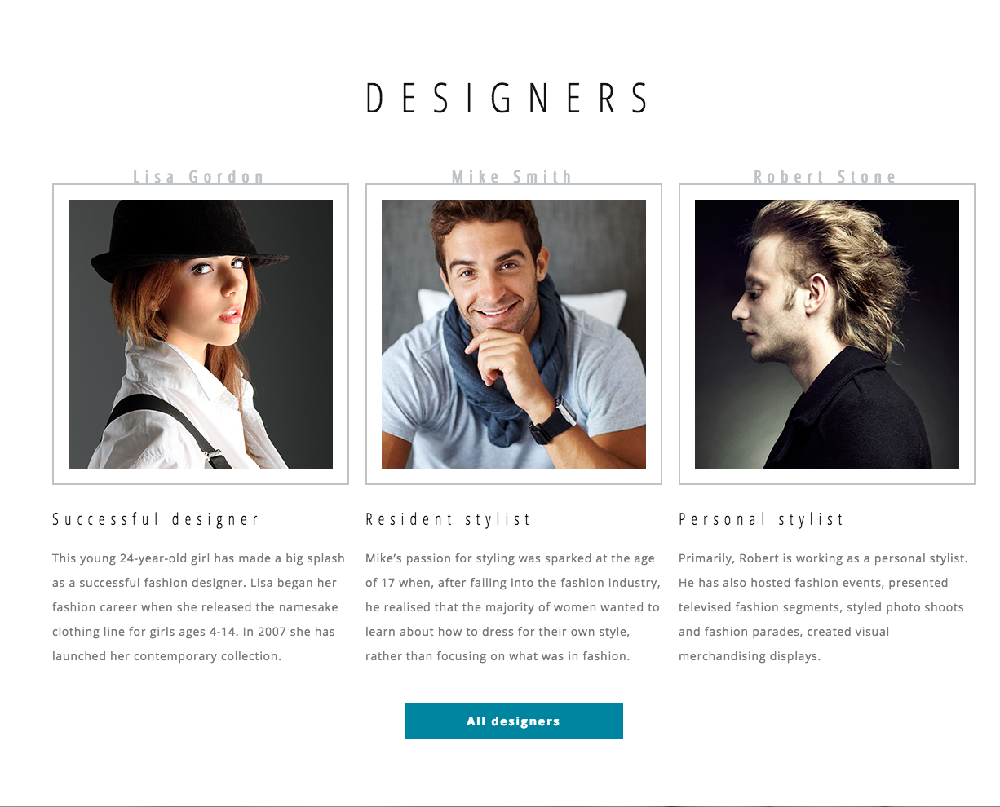
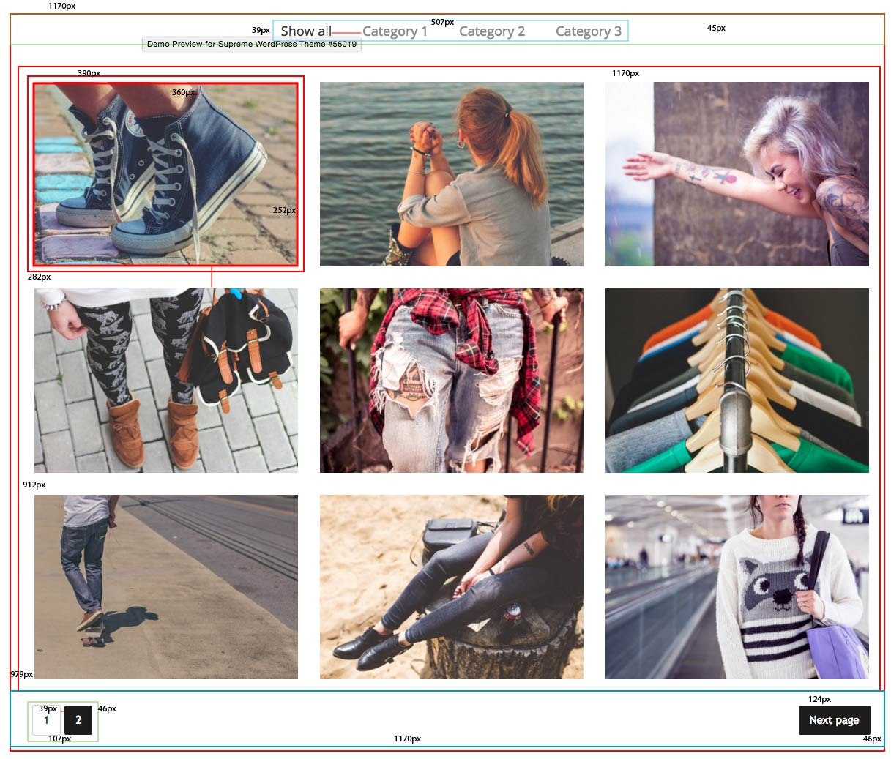
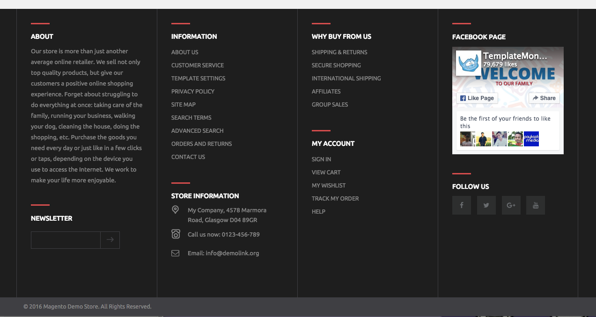

Component Library
Drop-Down Menu Header
What I hope to practice/learn?
A header is a crucial element to a website. Getting it to sit on the page and function properly is even more
crucial.
How this relates to what I have/will learn.
Having a header tool bar with drop-down elements makes a website even more useful by providing more links for
the user to click
and allow them to get more specific with what they are looking for without having to use a search bar.
View Component
View Original
Fixed Background Image
What I hope to practice/learn?
I hope to achieve the understanding of how to get an image to stay fixed behind scrolling text and other page elements.
How this relates to what I have/will learn.
With this element I can give a site a whole new effect. But getting the text to scroll over the background image.
View Component
View Original

Responsive Features List
What I hope to practice/learn
I hope to learn how to get responsiveness to work properly when sizing down windows and to get all the
elements to behave when I do so. Like when it takes a horizontal list of elements and converts them to a
vertical list for smaller windows.
How this relates to what I have/will learn
This feature will aid the user in using my site on any platform and device. As well as just resizing it on a
larger screen so as to fit multiple windows on the screen.
View Component
View Original

Gallery
What I hope to practice/learn
Using this kind of element to allow a user to see multiple images at once on the page.
How this relates to what I have/will learn
THe main benefit of this element is saving space and giving the user something new and interesting to use and
look at. It also gives me a chance to learn more about using the element. It can be used in so many
different ways.
How might I build this?
- Open with a section tag
- Use a Nav tag
- with an unordered list inside the nav tag
- close the nav and unordered list
- Insert images
- insert button tags
View Component
View Orignal (click on "photos")

Footer
What I hope to practice/learn?
I won't be using any sort of table formatting for this. I'll be using divs and positioning.
How this relates to what I have/will learn.
A footer is always required. But how it is used can vary on the developer's needs. This footer will have
contact info for the business, some social media buttons, and some quick links for the user to get back to
where they want to be.
View Component
View OriginaL